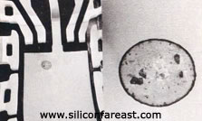
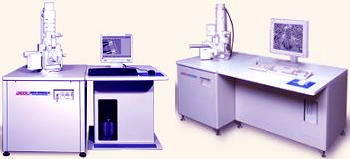

|
SEM/TEM
Scanning Electron
Microscopy (SEM)
Scanning
electron microscopy
is used for inspecting topographies of specimens at very
high
magnifications using a piece of equipment called the
scanning
electron microscope.
SEM magnifications can go to more than 300,000 X but most semiconductor
manufacturing applications require magnifications of less than 3,000 X
only. SEM inspection is often used in the analysis of die/package cracks
and fracture surfaces, bond failures, and physical defects on the die or
package surface.
During SEM
inspection, a beam of electrons is focused on a spot volume of the
specimen, resulting in the transfer of energy to the spot. These
bombarding electrons, also referred to as
primary
electrons,
dislodge electrons from the specimen itself. The dislodged electrons, also
known as
secondary
electrons,
are attracted and collected by a positively biased grid or detector, and
then translated into a signal.
To produce the
SEM image, the electron beam is
swept across
the area being inspected, producing many such signals. These signals are
then amplified, analyzed, and translated into images of the topography
being inspected. Finally, the image is shown on a CRT.
The
energy
of the primary electrons determines the quantity of
secondary
electrons collected during inspection. The emission of secondary electrons
from the specimen increases as the energy of the primary electron beam
increases, until a certain limit is reached. Beyond this limit, the
collected secondary electrons diminish as the energy of the primary beam
is increased, because the primary beam is already activating electrons
deep below the surface of the specimen. Electrons coming from such depths
usually recombine before reaching the surface for emission.
Aside from
secondary electrons, the primary electron beam results in the emission of
backscattered
(or reflected) electrons from the specimen. Backscattered electrons
possess more energy than secondary electrons, and have a definite
direction. As such, they can not be collected by a secondary electron
detector, unless the detector is directly in their path of travel. All
emissions above 50 eV are considered to be backscattered electrons.
|
 |
|
Fig. 1.
Example of a SEM photo of a contaminated area on a leadframe; EDX analysis
is usually performed to identify such contaminants |
Backscattered
electron imaging
is useful in distinguishing one material from another, since the yield of
the collected backscattered electrons increases monotonically with the
specimen's atomic number. Backscatter imaging can distinguish elements
with atomic number differences of at least 3, i.e., materials with atomic
number differences of at least 3 would appear with good contrast on the
image. For example, inspecting the remaining Au on an Al bond pad after
its Au ball bond has lifted off would be easier using backscatter imaging,
since the Au islets would stand out from the Al background.
A SEM may be
equipped with an EDX analysis system to enable it
to perform compositional analysis on specimens. EDX analysis is
useful in identifying materials and contaminants, as well as estimating
their relative concentrations on the surface of the specimen.
When performing
SEM inspection, the following must be observed:
1) The
EHT
must be high enough to provide a good image but low enough to prevent
specimen charging.
2) To maximize
contrast
due to material differences, use as low an EHT as possible.
3) If possible,
sputter-coat
the specimen to prevent
specimen
charging.
Sputter-coating is considered destructive. Never sputter-coat units that
still need to undergo electrical testing, curve tracing, EDX analysis,
inspection, etc.
4) The
probe current
must be set to
its default value, unless a higher probe current is needed to focus the
point of interest properly.

Fig. 2.
Two examples of Scanning Electron Microscopes
Failure
Mechanisms/Attributes Used For:
Die/Package Cracks, Die Attach Failures/Defects, Bonding Failures/Defects,
Wire Defects/Fractures, Lead Defects/Failures, Foreign Materials on
Die/Package, Die Surface Defects, Seal Cracks/Defects, etc.
Transmission Electron
Microscopy (TEM)
Transmission
Electron Microscopy (TEM)
is a technique used for analyzing the morphology, crystallographic
structure, and even composition of a specimen. TEM provides a much
higher
spatial resolution than SEM, and can facilitate the analysis of features
at atomic scale (in the range of a few nanometers) using electron beam
energies in the range of 60 to 350 keV.
Unlike the SEM
which relies on dislodged or reflected electrons from the specimen to form
an image, the TEM collects the electrons that are
transmitted
through the specimen. Like the SEM, a TEM uses an electron gun to
produce the primary beam of electrons that will be focused by lenses and
apertures into a very thin, coherent beam.
This beam is
then controlled to strike the specimen. A portion of this beam gets
transmitted to the
other side
of the specimen, is collected, and processed to form the image.
For crystalline
materials, the specimen diffracts the incident electron beam, producing
local
diffraction
intensity variations
that can be translated into contrast to form an image. For amorphous
materials, contrast is achieved by variations in electron scattering as
the electrons traverse the chemical and physical differences within the
specimen.
The greatest
consideration when performing TEM analysis is
sample
preparation.
The quality of sample preparation contributes greatly to whether the
micrograph will be good or not, so analysts are required to exercise the
necessary diligence in preparing the sample for TEM analysis.
See Also:
Failure
Analysis; All
FA Techniques;
Optical
Inspection; EDX/WDX Analysis
Auger Analysis;
EBIC; FA Lab
Equipment; Basic FA
Flows;
Package Failures; Die
Failures
HOME
Copyright
© 2001-2005
www.EESemi.com.
All Rights Reserved.
|